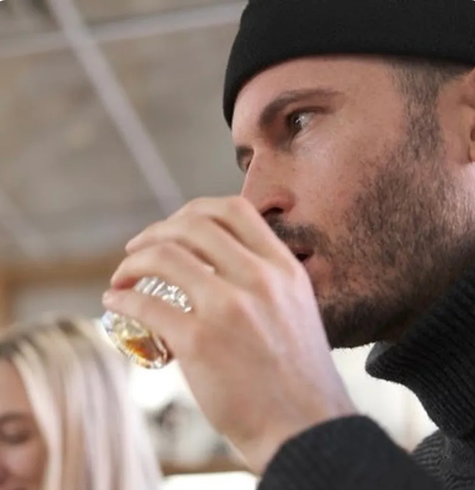

Communications | Brand & Industry Strategy | Sales & Growth
Senior coffee professional with 14 years of experience in specialty coffee, spanning B2B growth (accound management), project management, media, private consulting, creative copy, and digital brand strategy.
Deep operational experience across the coffee value chain — wholesale, green coffee importing, equipment distribution, media, and brand storytelling. Recognized for building trusted industry relationships, translating complex sector issues into accessible narratives, and aligning content strategy with measurable reputation and growth objectives.
Packaging translation project management at Eight Ounce Coffee
SPRUDGE · CITY GUIDE
An exploration of Palermo's evolving specialty coffee scene, and new roasters are bringing fresh approaches to coffee in a city with deep-rooted traditions.
Read ArticleSPRUDGE · CITY GUIDE
A city guide highlighting Montreal's specialty coffee scene, its independent cafés, and the people shaping its coffee culture.
Read ArticleSPRUDGE · CITY GUIDE
A look at Quebec City's specialty coffee scene, connecting local cafés and coffee businesses with the city's distinctive culture and character.
Read ArticleMy background bridges frontline industry leadership and strategic communications execution. I have operated across wholesale, green coffee importing, equipment distribution, and international media — giving me an integrated view of the entire value chain.
I bring operational credibility, executive‑level writing skill, and global industry fluency — enabling communications strategy that is informed, trusted, and aligned with organizational goals.
Email: jonsdempsey@gmail.com
LinkedIn: linkedin.com/in/jondempsey1